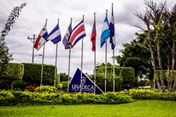

Documentos que deben ser entregados para la matricula
Nivel de Bachillerato Universitario,Licenciatura y Maestria

1.Certificación de notas de los dos últimos años de secundaria (4° y 5° años, y de 6° año cuando la secundaria fue de 6º años), la cual debe venir apostillada o autenticada. 2.Diploma o título de conclusión de estudios secundarios (Bachillerato, Educación Media, Preparatoria o High School) apostillado o autenticado. Si estudió, en un país que cuenta con el convenio de “La Apostilla” solo necesitan autenticar el título en el Ministerio de Educación y luego “APOSTILLAR” el mismo en el Ministerio de Relaciones Exteriores. Si estudió en un país que no cuenta con dicho convenio, debe autenticar el título en el Ministerio de Educación, Ministerio de Relaciones Exteriores y Consulado de Costa Rica.* Quien concluyó sus estudios de Educación Media en Costa Rica no requieren autenticar su diploma. 3.Fotocopia donde aparecen los datos personales de su pasaporte vigente 4.Copia de partida de nacimiento.
Los estudiantes que concluyeron sus estudios secundarios fuera de Costa Rica deben autenticar la firma del Cónsul de Costa Rica ante el Ministerio de Relaciones Exteriores de Costa Rica y solicitar la equiparación de su diploma ante la Oficina de Control de Calidad del Ministerio de Educación Pública de Costa Rica. Si proviene de un país que no es de habla hispana, debe traducir el diploma y la certificación de notas con un traductor oficial del Ministerio de Relaciones Exteriores de Costa Rica antes de solicitar la equiparación. Los que provienen de países donde cuentan con el convenio de “La Apostilla”, no requieren autenticar el diploma ante el Ministerio de Relaciones Exteriores de Costa Rica.
DOCUMENTOS QUE DEBEN OBTENER LOS NO COSTARRICENSES PARA INGRESAR A COSTA RICA Y MATRICULARSE.
1.Pasaporte al día, con por lo menos un año de vigencia, con visa de turista. Boleto o pasaje de ida y regreso. 2.Partida de nacimiento con no más de seis meses de haber sido extendida, apostillada o autenticada. 3.Certificación de antecedentes penales con no más de tres meses de haber sido extendido apostillada o autenticada. 4.Certificación de Solvencia Económica, la cual se tramita en Costa Rica. 5.Seis (6) fotos tamaño pasaporte.